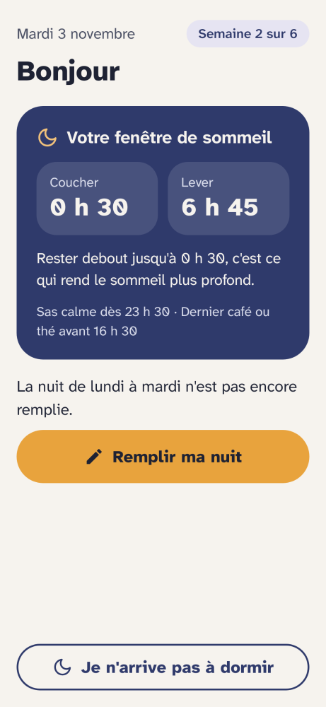
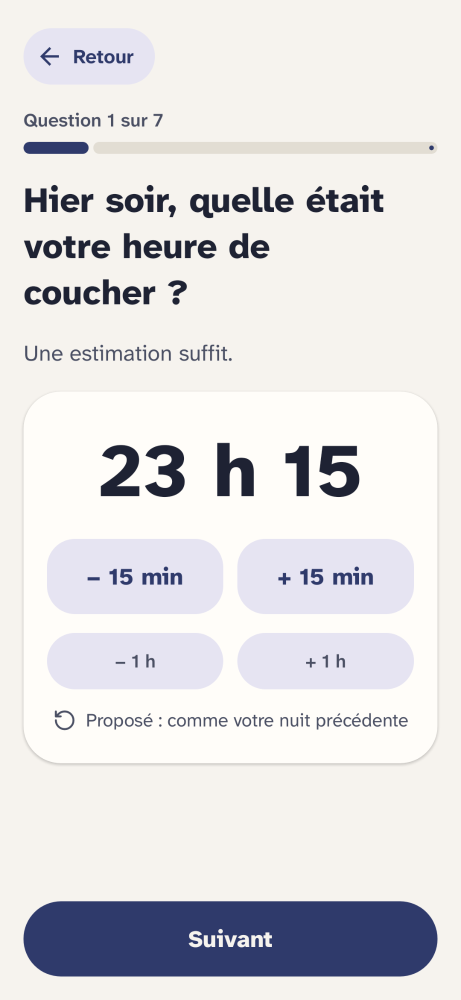

Retrouver le sommeil avec la méthode recommandée contre l'insomnie
Sommelle vous accompagne pendant six à huit semaines avec la thérapie cognitivo-comportementale de l'insomnie. Gratuite, sans compte, et vos données restent sur votre téléphone.
Disponible sur Google Play et GitHub. Bientôt sur F-Droid.


Pourquoi Sommelle
La thérapie cognitive et comportementale de l'insomnie (TCC-I) est le traitement recommandé en première intention, mais elle reste difficile d'accès : peu de praticiens formés, des délais longs, un coût souvent à la charge du patient. Sommelle veut aider le plus grand nombre de personnes possible, parce que tout le monde a droit à de l'aide pour mieux dormir. L'appli est gratuite, libre et ne collecte aucune donnée. Elle ne remplace pas un médecin, mais elle permet de commencer.
Le traitement recommandé
La thérapie cognitivo-comportementale de l'insomnie est le traitement conseillé en premier par les recommandations européennes et américaines, avant les somnifères.
Pensée pour tout le monde
Grands caractères, gros boutons, pas de jargon, et un agenda qui se remplit en vingt secondes, même mal réveillé.
Vos données chez vous
Pas de compte, pas de publicité, rien n'est envoyé. Le code est ouvert : chacun peut le vérifier.
Comment ça marche
Le programme reprend les étapes de la thérapie, une à une, au rythme d'un geste par jour.
Quelques questions et un cap clair
Deux à trois minutes pour vérifier que le programme de 6 semaines vous convient, comprendre ses trois étapes et l'adapter si besoin.
Une semaine d'observation (7 nuits)
Chaque matin, vous notez votre nuit sans rien changer encore à vos horaires. Une estimation suffit : inutile de regarder l'heure la nuit.
Votre fenêtre de sommeil (5 semaines)
Sommelle vous propose des horaires de coucher et de lever pour concentrer le sommeil, puis les élargit de 15 minutes par semaine dès que le sommeil devient plus continu, avec des repères horaires adaptés (sas calme 1 h avant, arrêt du café ou du thé 8 h avant).
Un appui la nuit, en soirée et dans la durée
Si vous ne dormez pas, un écran sombre vous rappelle quoi faire sans afficher l'heure et propose un repère sonore doux à 20 minutes. En soirée, les exercices de relaxation, le carnet du soir, les habitudes de chambre et les repères anti-rechute peuvent s'utiliser ou s'écouter les yeux fermés.
Pour qui
Sommelle est faite pour vous si
- vous avez du mal à vous endormir, vous vous réveillez la nuit ou trop tôt ;
- cela dure depuis des semaines et pèse sur vos journées ;
- vous êtes adulte.
Parlez-en plutôt à votre médecin si
- vous ronflez fort avec des arrêts de respiration ;
- vous vous endormez sans le vouloir dans la journée ;
- vous travaillez de nuit ou en horaires décalés.
Le questionnaire de départ repère ces situations et vous oriente.
Sommelle ne remplace pas un avis médical. C'est un outil d'accompagnement et d'éducation, pas un dispositif médical. En cas de doute sur votre sommeil ou votre santé, parlez-en à un professionnel de santé.
Questions fréquentes
Est-ce vraiment gratuit ?
Oui, entièrement : pas d'abonnement, pas d'achat intégré, pas de publicité. Sommelle est un logiciel libre sous licence MPL-2.0.
Que deviennent mes données ?
Elles restent sur votre téléphone. Sommelle ne demande aucun compte et n'a pas accès à Internet. Elles sont exclues de la sauvegarde Android dans le cloud, et vous pouvez les faire passer vous-même d'un téléphone à l'autre.
Combien de temps faut-il y consacrer ?
Environ vingt secondes chaque matin pour l'agenda, et quelques minutes par semaine pour le bilan. Le programme dure six à huit semaines.
Et sur iPhone ?
Sommelle existe pour l'instant sur Android uniquement.
Comment l'installer ?
Sommelle est disponible sur le Google Play Store. Vous pouvez également télécharger l'APK signé depuis GitHub.
Je suis médecin ou pharmacien, comment la recommander ?
Tout est sur la page professionnels de santé, avec une fiche à imprimer.
Essayer l'application en direct
Parcourez les écrans de Sommelle et testez la bascule entre le thème jour et l'écran de nuit sans lumière bleue.
Du même atelier (Pilmil Studio)
Deux autres applications Android libres, gratuites et sans accès à Internet.
Lunaison : suivre son cycle en toute intimité
Suivi du cycle menstruel, prévisions honnêtes, fiches médicales sourcées, bilan de consultation et partage partenaire par QR Code hors-ligne.
Respire : une pause avant d'ouvrir par réflexe
Une courte respiration avant les applications à défilement infini (particulièrement utile le soir avant le coucher), un choix « 2 min seulement » et un filtre des Reels et Shorts.